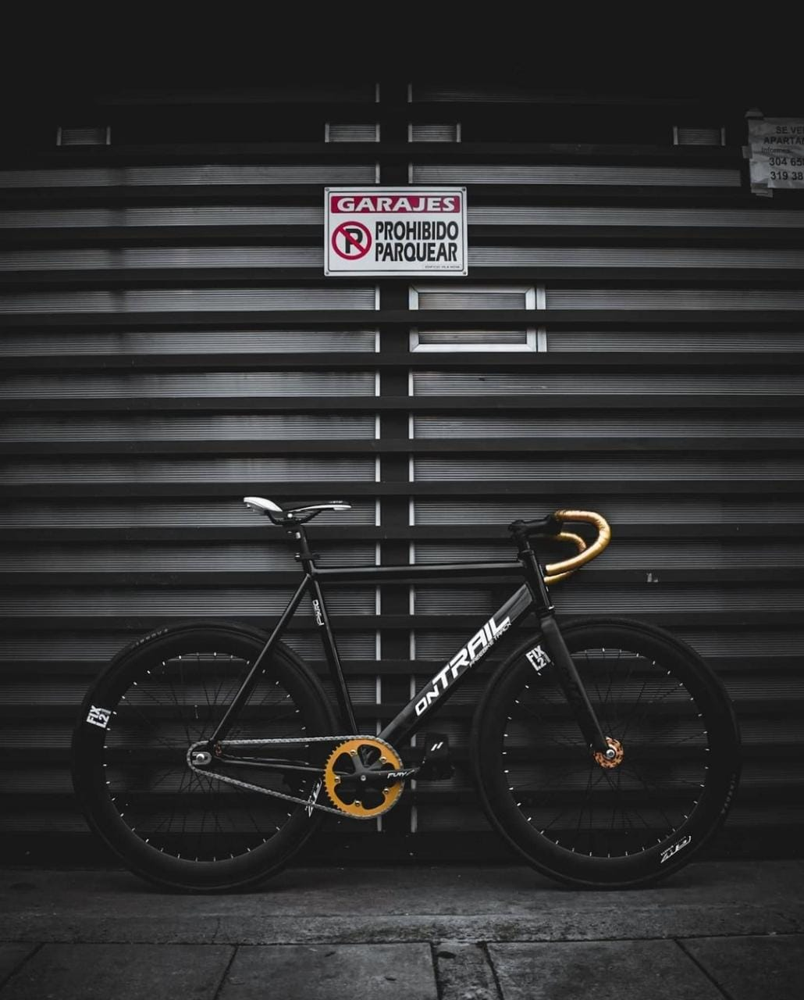
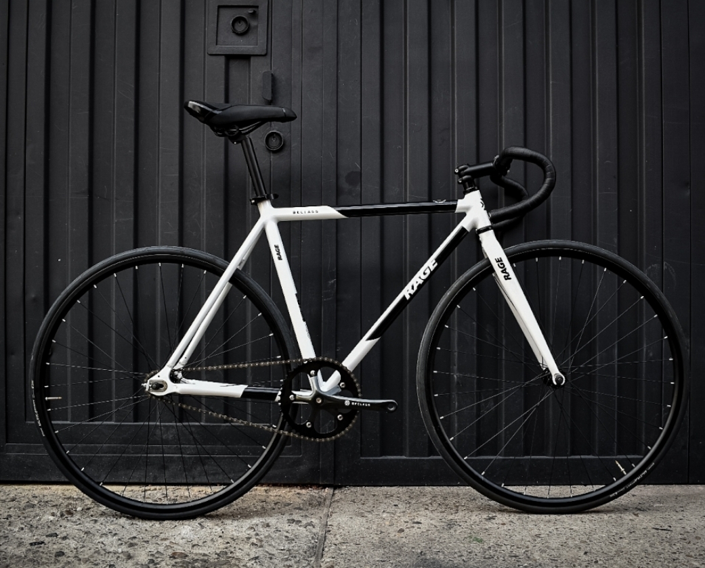

Fixed Gear Bike
Size: 25" | Model: Steel Fixed Gear Single Speed | Color: White / Grey
$349

X

Pedal Bike Straps
Bike handlebar phone sbag
Route bike handler
Bicycle Seat Cushion
Reviewed in Canada on February 08, 2022
Received it today. Looks aesthetically nice. However, put it together, (they supply tools but not all the right keys) and took off on a test drive.
Make sure you check everything, tension on my chain was a little loose out of the box so I ended up breaking it which was my fault, and needed to adjust brakes etc.
Neat little touch I didn’t realize before ordering was the rear tire having a single-speed flywheel to allow you to get used to the bike before switching to fixie. Overall, nice little bike! I’m 6’2 so I’m just on the edge of being a bit big, but overall it’s a comfortable and fun little ride.
Reviewed in Canada on March 15, 2022
I was worried about the assembly process as it seems mixed whether it is easy or not. The drivetrain comes ready to go as the assembly required is minimal and it comes with the tools required. That said I would suggest putting a significant amount of air in the tires as well as checking everything is torqued correctly (my handlebars came loose, my fault). The parts are just alright and longevity may be an issue, but that's expected at this price range.
That said, its super fun to ride, its geared for higher speeds, but generally perfect for commuting. Perfect cheap, simple bike to get you on the road..
Antonio Mejia
Reviewed in Canada on October 24, 2021
Great urban bike! Set up is easy and tuning brakes is just a video away. My bike came with the brake levers set up upside down on handle bars but that's only a screwdriver away also. I love how this bike rides, very smooth and efficient. All in all might be the best 349$ bike on the planet! If your looking for a fixed gear bike on a budget... this is it!